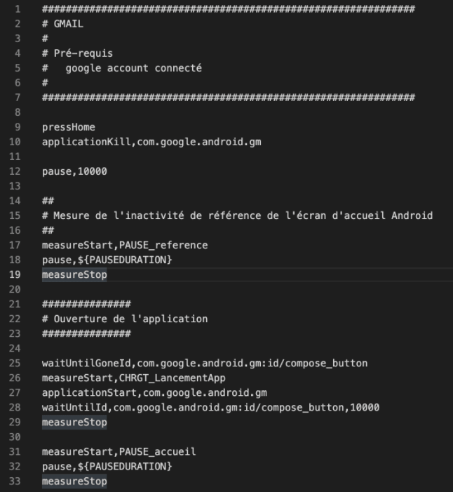

What is GDSL ?
The term GDSL stands for Greenspector Domain-Specific Language. It is a language created by Greenspector to simplify test automation on Android and iOS. To put it simply, it is an overlay based on the automation frameworks from Google and Apple, embellished with functions to ease test automation.
This language is the result of the Greenspector expertise accumulated over several years. It combines ease of writing with the ability to measure the energy performance of an application or website.
The GDSL principle is to be a language for describing actions that will be performed on the smartphone. In that sense, it can be closer to Gherkin with whom it shares the quality of not requiring developer training to be read.
The GDSL is a series of actions that will be performed in order on the smartphone. It has the basic actions of WAIT, CLICK or PAUSE as well as more complex actions such as launching an application or managing the GPS.
With GDSL it is possible to quickly automate most of the critical user journeys of your applications or mobile website.

GDSL syntax
Here is an example line from GDSL:
waitUntilText,username,10000
The first element, in green (waitUntilText), is the name of the method. Usually, it will be in English and self-explanatory. Here we will wait for a text. The main actions of WAIT and CLICK are available with variations for id, text or content description.
The second element, in orange (username), is going to be the main parameter of the method. This is usually the graphical element on which the action should be taken. Depending on the method called, this will be an id, a text or a description. In the example, this is a text.
The last element, in blue (10000), is a second parameter of the method. These are most often optional parameters giving additional conditions during execution. Here it is a time in milliseconds.
To separate each element we use a comma.
The method presented as an example is therefore used to wait for the element with the text « username » for a maximum of 10 seconds.
In the current state of the language, there are no methods requiring more than two parameters. If the method fails then the test will stop and the report will show the test as failed.
The advantages of GDSL
- GDSL does not require any development skills or knowledge of programming languages to be used or read. The names of the methods are self-explanatory and allow anyone new to the project to read and understand your tests.
- No IDE or specific development environment is required to write GDSL, a basic text editor is sufficient.
- One test = one file. With GDSL no need for complicated file architecture, only one file contains your test.
- Its ease of use allows you to write a test very quickly without relying on the rest of the test project as other automatic test languages would require.
- In addition, its ease of execution with the associated tools at Greenspector allows each new test to be implemented very quickly.
- Updated and maintained regularly, the language already has advanced features for website automation such as tab opening or URL navigation.
- In direct combination with the tools and expertise of Greenspector, GDSL is the only automation language that allows you to measure the performance and environmental impact of your application while performing your daily tests.
The current limits of GDSL
- The GDSL does not yet allow us to perform complex logic tests (for example: if I am connected then I see element 1, otherwise I see element 2). You have to write a different test for each case.
- The GDSL is based on graphic elements present in descriptive form. It is unable to interpret the content of an image or analyze the layout of your application. It cannot do a test verifying that the button is located at the bottom right of the screen.
The Greenspector team works daily to improve the language and add functionalities. The current state automates most of the scenarios required for a complete measurement campaign for an application or website as well as the critical journeys of most applications. In a future article, we will tell you about the Greenspector tools for running GDSL tests.